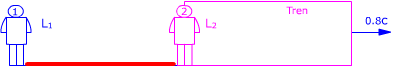
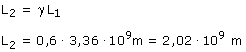

b) ¡Resulta que el tren dista de la estación 3.36·109 m y que la estación dista del tren 2.02 109 m! Vamos a justificar tan extraño resultado.  Considera la porción de vía que va de la estación al tren Observador 1 (Estación) Observador 2 (Tren) Aplicando la conversión de longitudes: 
|